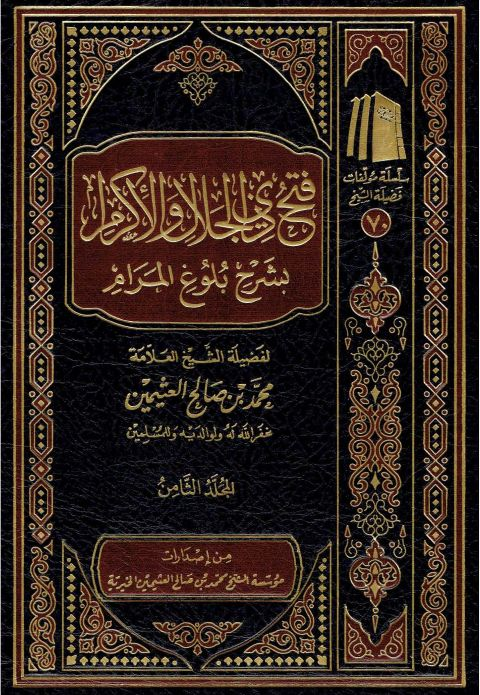

Downloads need an internet connection.
فتح ذي الجلال والإكرام بشرح بلوغ المرام- المجلد الثامن
Authors: محمد بن صالح العثيمين
Publishers: مؤسسة الشيخ محمد بن صالح العثيمين الخيرية
**▫️ العنوان: فتح ذي الجلال والإكرام بشرح بلوغ المرام- المجلد الثامن** ▪️ المؤلف: #محمد_بن_صالح_العثيمين ▫️ الناشر: #مؤسسة_الشيخ_محمد_بن_صالح_العثيمين_الخيرية ▪️ تاريخ النشر: 1444هـ 2023م ▫️ بلد النشر: القصيم، #السعودية ▪️ الطبعة: 7 ▫️ عدد الأجزاء: ج8 ▪️ الصفحات: 1031 ▫️ نوع الوعاء: #كتاب ▪️ التصنيف الرئيسي: #الحديث_وعلومه ۪